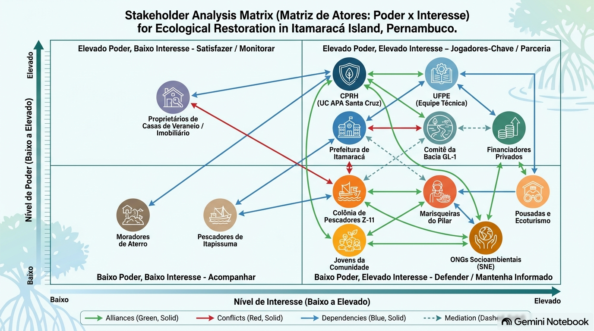

Seção 4 — Análise de Governança, Atores e Justiça Socioambiental (Exercício 2)
Este documento contou com o auxílio de ferramenta de inteligência artificial (Gemini Notebook) exclusivamente para suporte técnico à formatação na linguagem Quarto (.qmd), revisão ortográfica e estruturação editorial do relatório, mantendo-se integralmente a autoria, a fundamentação teórica de ecologia política e os dados científicos originais do diagnóstico de campo e do PIBIC UFPE.
1. Parte 1 — Delimitação da Área e Premissas do Cenário
1.1 Unidade de Restauração e Contexto Geográfico
A unidade de planejamento da restauração abrange a totalidade do território municipal da Ilha de Itamaracá (8.311,91 hectares no recorte insular), integralmente inserida na Área de Proteção Ambiental (APA) Estuarina de Santa Cruz (unidade de conservação estadual com 38.692,34 hectares totais). A ilha é banhada a oeste pelo Canal de Santa Cruz e a leste pelo Oceano Atlântico.
O ponto focal de amostragem direta e intervenção piloto situa-se na orla periurbana do Bairro do Pilar / Bairro Novo (coordenadas centrais: 7°44’50” S e 34°50’25” O), abrangendo um setor de 5,4 hectares de borda estuarina (250 metros de orla por 70 metros de largura de zona entremarés e ecótono). O sítio conecta-se à Bacia Hidrográfica do Rio Goiana e pequenos rios litorâneos (Grupo GL-1), recebendo vazão hídrica continental dos rios Botafogo, Igarassu e Maniquara. A fitofisionomia nativa de referência pertence ao bioma Mata Atlântica, dominada pelo manguezal estuarino (Rhizophora mangle, Avicennia schaueriana e Laguncularia racemosa), intercalado por formações de restinga e vegetação de transição.
1.2 Premissas do Cenário Socioambiental
- Regime de Posse da Terra: Área pública sob regime de Unidade de Conservação de Uso Sustentável (APA Estuarina de Santa Cruz, Decreto Estadual nº 32.488/2008 e Lei Federal nº 9.985/2000 - SNUC). A faixa costeira enquadra-se como Terrenos de Marinha e Área de Preservação Permanente (APP). No zoneamento ambiental da CPRH, sobrepõe a Subzona Urbano-Turística a Áreas para Recuperação e Conservação (ARC) e Áreas Preferenciais para Preservação (APR).
- Histórico de Uso e Fontes de Financiamento: Uso centenário de pesca artesanal de subsistência e catação de moluscos/crustáceos (Callinectes marginatus). O financiamento apoia-se em arranjo misto: recursos de Compensação Ambiental (SEUC/CPRH) do Polo Industrial de Goiana/Itapissuma, edital do Fundo Estadual de Meio Ambiente (FEMA/PE) e parcerias socioambientais do setor hoteleiro e náutico local.
- Conflitos Territoriais: Privatização/obstrução do acesso público às praias por loteamentos de veraneio; contaminação do berçário estuarino por esgoto in natura e macroplásticos; e sobrepesca aliada à perda de áreas de acostagem de barcos artesanais.
1.3 Escalas de Atuação e Articulação
- Local/Comunitária: Bairros do Pilar, Jaguaribe, Vila Velha e Forno da Cal; Colônia Z-11, marisqueiras informais e moradores ribeirinhos.
- Municipal/Regional: Prefeitura da Ilha de Itamaracá, Prefeituras de Itapissuma e Goiana, Conselho Gestor da APA (CPRH) e Comitê da Bacia GL-1.
- Estadual/Nacional: CPRH, SEMAS/PE, UFPE (PIBIC) e Ministério do Meio Ambiente (MMA).
- Global: Padrões Internacionais da Society for Ecological Restoration (SER) e Metas de Kunming-Montreal (CDB/ONU).
2. Parte 2 — Levantamento e Mapeamento dos Atores Socioambientais
A Tabela 1 cadastra 14 atores reais do território da Ilha de Itamaracá, cobrindo as 5 categorias de Bryant & Bailey (1997) e 4 escalas de atuação.
Tabela 1: Cadastramento e Caracterização dos Atores da Ilha de Itamaracá
| Ator | Categoria (Bryant & Bailey, 1997) | Escala | Estabelecido / Interessado | Interesse na Área / Projeto | Recursos Mobilizados | Posição Estimada |
|---|---|---|---|---|---|---|
| 1. Colônia de Pescadores Z-11 | Atores de Base (Organizado) | Local / Municipal | Estabelecido | Manutenção de estoques pesqueiros e áreas de navegação e acostagem. | Conhecimento Ecológico Tradicional (TEK) e mobilização comunitária. | Apoia condicionalmente (exige garantia de livre pesca). |
| 2. Grupo de Marisqueiras do Pilar | Atores de Base (Grupo Informal / Gênero) | Local | Estabelecido | Renda de subsistência, segurança alimentar e despoluição das áreas de catação. | Conhecimento prático da zona entremarés e trabalho manual intensivo. | Apoia fortemente (exige inclusão remunerada). |
| 3. Jovens e Filhos de Pescadores | Atores de Base (Recorte de Geração) | Local | Estabelecido | Oportunidades de trabalho local, bolsas de monitoramento e capacitação. | Mão de obra jovem, dinamismo e afinidade com tecnologias de campo. | Apoia (condicionado à geração de vagas remuneradas). |
| 4. Moradores de Ocupações em Aterro | Atores de Base (Vulnerável / Sem Título) | Local | Estabelecido | Regularização de infraestrutura urbana e proteção contra remoções habitacionais. | Presença física contínua e organização comunitária de bairro. | Resistente / Desconfiado (teme despejos ambientais). |
| 5. Proprietários de Casas de Veraneio | Empresas / Setor Imobiliário | Municipal / Regional | Estabelecido | Valorização imobiliária, balneabilidade e privacidade nas bordas de praia. | Capital financeiro expressivo e acesso a assessoria jurídica privada. | Apoia condicionalmente (opõe-se a trilhas na borda privada). |
| 6. Prefeitura de Itamaracá | Estado | Municipal | Estabelecido | Valorização turística, limpeza urbana e cumprimento do Plano Diretor. | Poder fiscalizador municipal, alvarás e gestão da coleta de lixo. | Apoia (desde que não exija grandes aportes do caixa). |
| 7. Agência CPRH (Gestão da APA) | Estado | Estadual | Estabelecido | Cumprimento do Plano de Manejo, proteção de APPs e fiscalização do zoneamento. | Poder de polícia ambiental, licenciamento e gestão da compensação. | Apoia institucionalmente (exige rigor no licenciamento). |
| 8. Comitê de Bacia do Grupo GL-1 | Estado / Instância Participativa | Regional / Estadual | Estabelecido | Redução da carga poluidora no Canal de Santa Cruz e promoção de SbN na bacia. | Legitimidade institucional para alocação de recursos da cobrança de água. | Apoia entusiasticamente (enxerga projeto como piloto). |
| 9. UFPE (Equipe PIBIC/Pesquisa) | Academia / Consultoria | Estadual / Nacional | Estabelecido / Interessado | Produção científica, monitoramento do berçário (C. marginatus) e validação da SbN. | Conhecimento científico especializado e redes de amostragem de campo. | Apoia com liderança técnica (garantidora da metodologia). |
| 10. Pousadas e Ecoturismo | Empresas | Municipal / Regional | Estabelecido | Fortalecimento do ecoturismo sustentável e imagem ambiental da ilha. | Estrutura receptiva e conexões com o mercado turístico da RMR. | Apoia (busca integrar trilhas nos pacotes turísticos). |
| 11. Polo Industrial de Goiana | Empresas (Setor Privado) | Regional / Estadual | Interessado | Cumprimento de obrigações de licenciamento/TAC via Compensação Ambiental. | Elevado aporte de capital financeiro privado para financiamento. | Apoia como Financiador (busca ganho ESG). |
| 12. Fundo FEMA / SEMAS-PE | Financiador Público | Estadual | Interessado | Execução de políticas públicas de restauração em UCs com retorno social. | Recursos públicos estaduais não-reembolsáveis por editais. | Financiador em Potencial (exige salvaguardas sociais). |
| 13. Sociedade Nordestina de Ecologia | ONGs | Regional / Nacional | Interessado | Conservação da Mata Atlântica e garantia de justiça ambiental comunitária. | Captação de recursos internacionais e auditoria socioambiental. | Apoia e Audita (atua contra greenwashing). |
| 14. Pescadores de Itapissuma | Atores de Base (Vizinhos) | Regional / Intermunicipal | Estabelecido | Livre trânsito de barcos no canal e acesso aos croas e bancos compartilhados. | Uso prático contínuo do canal e rede de solidariedade pesqueira. | Neutro com Preocupação (exige canal de navegação livre). |
3. Parte 3 — Classificação de Poder e Mapa de Atores
3.1 Fichas Analíticas de Classificação de Poder (6 Atores Centrais)
1. Colônia de Pescadores Z-11 (Liderança Masculina/Rede)
- Modos de Poder (Wolf, 1990): Atributo (posse do Conhecimento Ecológico Tradicional - TEK) e Relacional (capacidade de vetar localmente ações que bloqueiem a navegação).
- Dimensão de Poder (Lukes, 1974): 1ª Dimensão (Decisão Observável) — Atua em reuniões abertas e disputas sobre pontos de acostagem.
- Mecanismos de Acesso (Ribot & Peluso, 2003): Acesso baseado em conhecimento, identidade cultural e redes sociais; fraco acesso ao capital e autoridade legal.
- Saliência (Mitchell et al., 1997): Ator Dependente (Legitimidade + Urgência, sem Poder Estrutural). Depende de alianças formais para garantir direitos.
2. Grupo Informal de Marisqueiras da Orla do Pilar
- Modos de Poder (Wolf, 1990): Atributo reduzido (trabalho manual intensivo) e ausência de poder tático ou estrutural nos espaços formais.
- Dimensão de Poder (Lukes, 1974): 3ª Dimensão (Formação de Preferências) — Internalização da exclusão, aceitando a poluição por esgoto como “condição natural incontornável”.
- Mecanismos de Acesso (Ribot & Peluso, 2003): Acesso baseado no trabalho físico diário; desprovidas de direitos formais de propriedade, mercados diretos (dependem de atravessadores) e capital.
- Saliência (Mitchell et al., 1997): Ator Exigente / Vulnerável (Legitimidade + Urgência, sem Poder). Alta urgência de despoluição, mas invisibilizada.
3. Agência Estadual de Meio Ambiente (CPRH)
- Modos de Poder (Wolf, 1990): Estrutural (poder de ditar as normas da APA e sanções) e Tático (controla os ritos e pautas do Conselho da UC).
- Dimensão de Poder (Lukes, 1974): 2ª Dimensão (Controle da Agenda / Não-Decisão) — Define pautas prioritárias de licenciamento e fiscalização.
- Mecanismos de Acesso (Ribot & Peluso, 2003): Acesso baseado na Autoridade Legal, Direitos Formais e Controle Coercitivo.
- Saliência (Mitchell et al., 1997): Ator Dominante (Poder + Legitimidade Legal).
4. Prefeitura Municipal da Ilha de Itamaracá
- Modos de Poder (Wolf, 1990): Tático/Organizacional (controle sobre uso do solo urbano, alvarás, obras e limpeza pública).
- Dimensão de Poder (Lukes, 1974): 1ª e 2ª Dimensões — Decide alocação de orçamento e omite-se na fiscalização de aterros de veranistas.
- Mecanismos de Acesso (Ribot & Peluso, 2003): Acesso baseado na Autoridade Política Local e Infraestrutura Urbana.
- Saliência (Mitchell et al., 1997): Ator Dominante (Poder + Legitimidade Política Local).
5. Proprietários de Casas de Veraneio (Setor Imobiliário Privado)
- Modos de Poder (Wolf, 1990): Atributo (elevado capital financeiro) e Tático (influência política e acesso a assessoria jurídica privada).
- Dimensão de Poder (Lukes, 1974): 2ª Dimensão (Controle da Agenda) — Mantém a privatização das praias fora do debate público municipal.
- Mecanismos de Acesso (Ribot & Peluso, 2003): Acesso baseado no Capital, Mercado Imobiliário e Propriedade Privatizada.
- Saliência (Mitchell et al., 1997): Ator Discrecionário / Perigoso (Poder Elevado sem Urgência Social ou Legitimidade Ambiental).
6. Universidade Federal de Pernambuco (UFPE / Equipe PIBIC)
- Modos de Poder (Wolf, 1990): Atributo (prestígio acadêmico) e Tático (capacidade de estruturar o projeto e definir indicadores de sucesso).
- Dimensão de Poder (Lukes, 1974): 2ª Dimensão (Controle da Agenda Técnica) — Determina métricas científicas válidas.
- Mecanismos de Acesso (Ribot & Peluso, 2003): Acesso baseado no Conhecimento Científico Especializado e Redes Acadêmicas.
- Saliência (Mitchell et al., 1997): Ator Dominante / Intermediário (Legitimidade Científica + Poder Técnico).
3.2 Diagrama da Matriz de Análise de Atores (Poder x Interesse)

4. Parte 4 — Análise das Assimetrias de Poder (Schlosberg, 2007)
A análise identifica 5 assimetrias estruturais de poder no território, conectando-as aos tipos de justiça ambiental (Schlosberg, 2007):
- Assimetria 1 (Gênero e Divisão Sexual do Trabalho Extrativo — Marisqueiras do Pilar vs. Lideranças Formais da Colônia Z-11):
- Análise: As marisqueiras executam o trabalho manual diário de catação mais insalubre na zona entremarés (expostas a dermatites e contaminação fecal), mas a representação formal na diretoria da Colônia Z-11 e no Conselho da APA é hegemonizada por homens (pescadores de embarcação).
- Justiça Afetada: Justiça de Reconhecimento (invisibilização do saber e da contribuição produtiva feminina) e Justiça Procedimental (exclusão dos processos deliberativos).
- Assimetria 2 (Escala e Regulação — CPRH/SEUC vs. Comunidade Tradicional de Pesca):
- Análise: A CPRH detém a autoridade legal e a linguagem técnico-jurídica do licenciamento e zoneamento (ARC/APR), enquanto os pescadores locais não possuem assessoria jurídica para interpretar os pareceres da unidade de conservação.
- Justiça Afetada: Justiça Procedimental (barreira linguística e assimetria de informação nos ritos da UC).
- Assimetria 3 (Econômica e Acesso Físico ao Território — Setor Imobiliário de Veraneio vs. Extrativistas Nativos):
- Análise: Veranistas utilizam capital para erguer muros de contenção sobre Terrenos de Marinha, privatizando caminhos históricos de praia e obrigando marisqueiras a darem longas voltas para acessar os canais de maré.
- Justiça Afetada: Justiça Distributiva (apropriação privada de bem comum) e Justiça de Reconhecimento (desrespeito aos direitos territoriais tradicionais).
- Assimetria 4 (Geração e Oportunidades de Trabalho — Jovens Locais vs. Mercado Externo):
- Análise: Jovens da ilha enfrentam escassez de empregos qualificados e são empurrados para o subemprego ou emigração, enquanto projetos de intervenção correm o risco de contratar apenas consultorias externas sem capacitar a juventude local.
- Justiça Afetada: Justiça Distributiva (evasão externa dos recursos do projeto) e Justiça de Reconhecimento (desvalorização do potencial da juventude).
- Assimetria 5 (Epistemológica — Saber Acadêmico UFPE vs. Conhecimento Ecológico Tradicional - TEK):
- Análise: A universidade possui a prerrogativa de validar métricas científicas (Callinectes marginatus), correndo o risco de subordinar a percepção empírica diária dos pescadores sobre o estuário ao rigor laboratorial.
- Justiça Afetada: Justiça de Reconhecimento (subordinação epistemológica do saber tradicional ao saber técnico).
5. Parte 5 — Riscos de Injustiças no Ciclo de Vida do Projeto
| Etapa do Projeto | Risco Identificado de Injustiça Socioambiental | Tipo de Injustiça Potencial |
|---|---|---|
| 1. Diagnóstico | Mapeamento exclusivamente por satélite/drones, invisibilizando caminhos manuais de catação e limites informais comunitários. | Reconhecimento |
| 2. Definição de Metas | Estabelecimento de metas de “preservação intocada” que proíbam o extrativismo artesanal de subsistência em áreas de recuperação. | Distributiva / Reconhecimento |
| 3. Escolha de Técnicas | Instalação de ecobarreiras ou biofiltros em pontos que fiquem no caminho de navegação de pequenas canoas de pesca. | Procedimental / Distributiva |
| 4. Contratação / Insumos | Contratação de empreiteiras externas para montagem das obras, deixando a comunidade como mão de obra voluntária não-remunerada. | Distributiva |
| 5. Monitoramento | Centralização das análises em laboratórios universitários, sem devolver os resultados em linguagem acessível à comunidade. | Procedimental |
| 6. Pós-Financiamento | Abandono da infraestrutura após o fim da verba de compensação, transferindo o custo de manutenção das ecobarreiras para os pescadores. | Distributiva |
6. Parte 6 — Medidas Corretivas Incorporadas ao Desenho do Projeto
Para corrigir as assimetrias e mitigar os riscos mapeados, o projeto incorpora 5 medidas vinculantes:
- Paridade de Gênero e Governança Comunitária (Justiça Procedimental): Instituição do Comitê Local de Co-gestão com 50% das cadeiras reservadas para a Colônia Z-11 e o Grupo de Marisqueiras, exigindo paridade de gênero e voto deliberativo sobre a aplicação de verbas.
- Remuneração Obrigatória do Trabalho Local (Justiça Distributiva): Destinação vinculante de no mínimo 35% do orçamento direto do projeto para pagamento de diárias e salários a pescadores, marisqueiras e jovens contratados para montagem e manutenção dos biofiltros e ecobarreiras.
- Cartografia Participativa das Servidões de Acesso (Justiça de Reconhecimento): Mapeamento comunitário prévio para registrar no Plano de Manejo as servidões tradicionais de passagem, condicionando licenças municipais à desobstrução de caminhos bloqueados por veranistas.
- Programa de Bolsas de Monitoramento Jovem (Justiça de Reconhecimento/Distributiva): Criação de 6 bolsas de Monitoramento Comunitário (PIBIC-Comunitário) para jovens locais realizarem a amostragem de dados junto à UFPE, com apresentações trimestrais em linguagem acessível.
- Fundo Comunitário de Manutenção de Longo Prazo (Justiça Distributiva): Reversão de 10% dos aportes de compensação ambiental para um Fundo gerido pela Colônia Z-11 e Marisqueiras, garantindo orçamento para manutenção das ecobarreiras após o 5º ano.
7. Parte 7 — Síntese Crítica e Reflexão (300 a 400 palavras)
O planejamento socioambiental do Projeto de Intervenção em Área Degradada (PAD) na Ilha de Itamaracá demonstra que a restauração ecológica de manguezais periurbanos é um ato eminentemente político e territorial. Ao integrar a análise de ecologia política, o projeto busca redistribuir poder e renda, superando a mera consulta pro forma ao instituir cotas deliberativas para marisqueiras e destinação orçamentária direta (35%) para o trabalho comunitário remunerado.
A assimetria estrutural mais complexa de corrigir dentro do escopo do projeto reside no poder econômico e fundiário do setor imobiliário de veraneio, cujas infraestruturas privadas e muros avançam historicamente sobre Terrenos de Marinha e APPs. Embora o projeto estabeleça a cartografia participativa para pressionar pela desobstrução das servidões de passagem, a regularização fundiária plena exige instrumentos coercitivos do Estado que extrapolam a gestão da restauração.
Registra-se como limitação analítica a necessidade de escuta direta mais aprofundada dos moradores das ocupações informais recentes sobre os aterros de mangue e dos pes ناقadores artesanais do município vizinho de Itapissuma, cujo trânsito de embarcações pelo Canal de Santa Cruz pode ser impactado pela disposição espacial das ecobarreiras.
Por fim, a análise socioeconômica transformou radicalmente o desenho ecológico do projeto: abandonou-se qualquer proposta de cercamento ou interdição de áreas de manguezal em favor de Soluções Baseadas na Natureza (wetlands e ecobarreiras) que atuam diretamente sobre os estressores abióticos (esgoto in natura e lixo plástico flutuante) sem restringir o uso extrativo tradicional de subsistência das marisqueiras e pescadores da APA Estuarina de Santa Cruz.